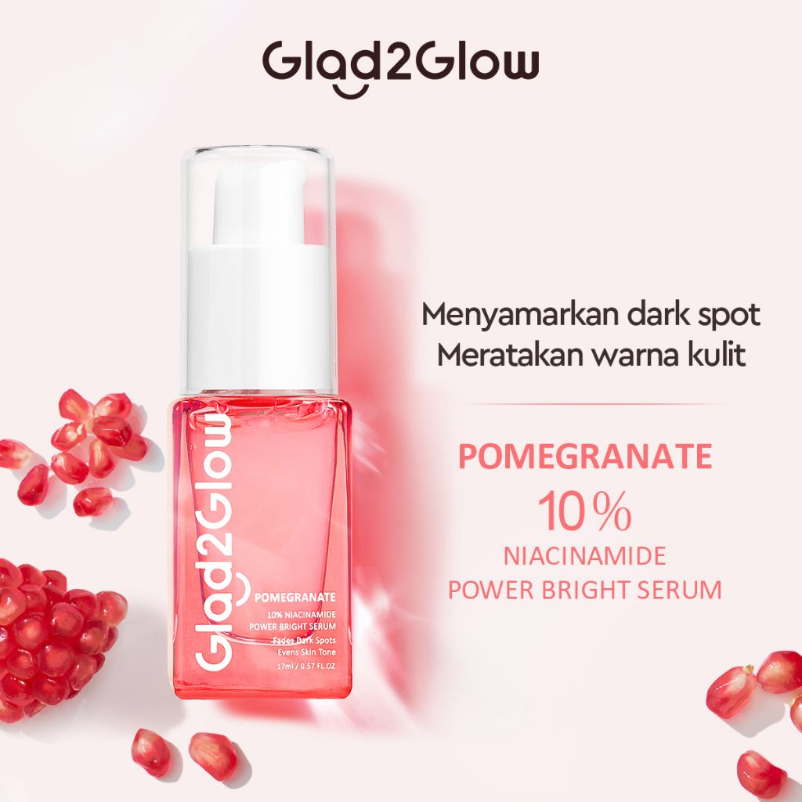

G2G Brightening Pemogranate Serum
✅ Detail Produk
Warna Kemasan: Pink pastel elegan
Isi Bersih: 15-30 ml
✅ Deskripsi
G2G Brightening Pomegranate Serum adalah serum wajah dengan kandungan ekstrak buah delima (pomegranate) yang kaya antioksidan.
Membantu mencerahkan kulit kusam, meratakan warna kulit, dan menjaga kelembapan agar wajah tampak cerah, halus, dan sehat bercahaya.
Formulanya ringan, cepat meresap, dan nyaman digunakan setiap hari.
✅ Manfaat Utama
- Mencerahkan kulit kusam & meratakan warna kulit
- Menjaga kelembapan dan elastisitas kulit
- Melindungi kulit dari radikal bebas berkat antioksidan alami
- Membantu menyamarkan noda hitam dan bekas jerawat
- cocok untuk semua jenis kulit.
✅ Cara Pakai
Gunakan 2–3 tetes serum pada wajah yang bersih (setelah toner). Tepuk lembut hingga meresap sempurna. Lanjutkan dengan moisturizer untuk hasil maksimal.
✅ Harga
Rp39.000
← Kembali Belanja